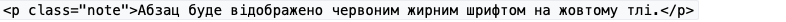
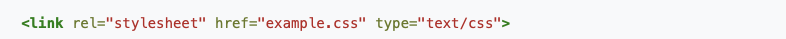
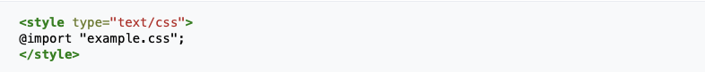

Огляд
CSS використовується авторами та відвідувачами вебсторінок, щоб визначити кольори, шрифти, верстання та інші аспекти вигляду сторінки. Одна з головних переваг — можливість розділити зміст сторінки (або контент, наповнення, зазвичай HTML, XML або подібна мова розмітки) від вигляду документу (що описується в CSS).
Таке розділення може покращити сприйняття та доступність контенту, забезпечити більшу гнучкість та контроль за відображенням контенту в різних умовах, зробити контент більш структурованим та простим, прибрати повтори тощо. CSS також дозволяє адаптувати контент до різних умов відображення (на екрані монітора, мобільного пристрою (КПК), у роздрукованому вигляді, на екрані телевізора, пристроях з підтримкою шрифту Брайля або голосових браузерах та ін.).
Один і той самий HTML або XML документ може бути відображений по-різному залежно від використаного CSS. Стилі для відображення сторінки можуть бути:
-
Стилі автора (інформація надана автором сторінки):
- зовнішні таблиці стилів (англ. stylesheet), найчастіше окремий файл або файли .css
- внутрішні таблиці стилів, включені як частина документу або блоку
- стилі для окремого елементу
- Стилі користувача:
- локальний .css-файл, вказаний користувачем для використання на сторінках і вказаний в налаштуваннях браузера (наприклад Opera)
- Стилі переглядача (браузера):
- стандартний стиль переглядача, наприклад стандартні стилі для елементів, визначені браузером, використовуються коли немає інформації про стиль елемента або вона неповна.
Стандарт CSS визначає порядок та діапазон застосування стилів, тобто, в якій послідовності і для яких елементів застосовуються стилі. Таким чином, використовується принцип каскадності, коли для елементів вказується лише та інформація про стилі, що змінилася або не визначена загальнішими стилями.
Переваги
- Інформація про стиль для усього сайту або його частин може міститися в одному .css-файлі, що дозволяє швидко робити зміни в дизайні та презентації сторінок;
- Різна інформація про стилі для різних типів користувачів: наприклад великий розмір шрифту для користувачів з послабленим зором, стилі для виводу сторінки на принтер, стиль для мобільних пристроїв;
- Сторінки зменшуються в об'ємі та стають більш структурованими, оскільки інформація про стилі відділена від тексту та має певні правила застосування і сторінка побудована з урахуванням їх;
- Прискорення завантаження сторінок і зменшення обсягів інформації, що передається, навантаження на сервер та канал передачі. Досягається за рахунок того, що сучасні браузери здатні кешувати (запам'ятовувати) інформацію про стилі і використовувати для всіх сторінок, а не завантажувати для кожної.
Синтаксис
CSS має порівняно простий синтаксис і використовує небагато англійських слів для найменування різних складових стилю.
Стилі складаються зі списку правил. Кожне правило має один або більше селектор (англ. selector) та блок визначення (англ. declaration block). Блок визначення складається з оточеного фігурними дужками списку властивостей.
Властивості в списку оформлюються у вигляді назва властивості, двокрапка (:), значення, крапка з комою (;).
Приклад:
p {
font-family: Verdana, sans-serif;
}
h2 {
font-size: 110%;
color: red;
background: white;
}
•note {
color: red;
background: yellow;
font-weight: bold;
}
p.warning {
background: url(warning.png) no-repeat fixed top;
}
#paragraphl {
margin: 0;
}
a:hover {
text-decoration: none;
}
#news p {
color: red;
}
В прикладі використано 7 правил, селектори p, h2, .note, p.warning, #paragraph1, a:hover та #news p. Приклад властивості: color: red, де властивості з назвою color присвоєно значення red.
В перших двох правилах визначаються властивості HTML-елементів p (абзац, скорочення від англ. paragraph) та h2 (Заголовок другого рівня, скорочення від англ. header). Абзац буде відображено шрифтом Verdana або, у разі відсутності Verdana, іншим шрифтом sans-serif. Заголовок другого рівня буде відображено червоним кольором на білому тлі.
Третє правило буде застосовано до всіх елементів, властивість class визначена як 'note'. Наприклад:

Третє правило також можна записати як *.note.
Щоб третє правило застосовувалося лише до абзаців, його слід переписати як:
p. note {
color: red; background: yellow;
font-weight: bold;
}
Четверте правило стосується тих елементів рівня абзацу (p), що мають властивість class рівну 'warning'. Такі абзаци матимуть фонове зображення warning.png згори.
Властивість .class може мати не лише порівняння, але й перелік. Коли властивість class містить
перелік значень, розділених пробілом, то до цього елементу застосовуються правила усіх
перелічених
класів. Наприклад до:
p class="note warning"
будуть застосовані правила
note та
warning.
П'яте правило застосовується лише до одного елементу в документі HTML, що має ідентифікатор id рівний paragraph1. Цей елемент не буде мати межі навколо, тому що властивість margin дорівнює 0. Наприклад:

Шосте правило визначає стиль наведення мишкою (hover) для a (anchor) елементів. Стандартно більшість браузерів підкреслюють елементи a (посилання в межах одного документа або на інші HTML-документи). Це правило прибирає підкреслювання з посилань, коли користувач наводить на них мишкою.
Останнє правило застосовується до тих абзаців, що знаходяться всередині (мають батьківський елемент) з ідентифікатором news. Це приклад наслідування властивостей.
Завдяки каскадній структурі CSS, ці абзаци (p) будуть наслідувати font-family: Verdana, sans-serif; як і всі елементи p (абзаци). Ті з них, що мають class рівний warning будуть мати також і фонове зображення.
CSS може також містити коментарі. Синтаксис коментарів подібний до синтаксису, що використовується в багатьох мовах програмування (наприклад C, PHP). Слід звернути увагу на те, щоб в коментарях CSS-файлів не використовувалися кириличні літери (деякі браузери некоректно обробляють CSS-файли з українськими літерами).
/* comment */
Селектори та Псевдо-класи
CSS має спеціальні позначення (селектори, від англ. selector) для визначення діапазону застосування правила.
Всі елементи
використовується селектор * (часто не пишеться, наприклад * p та p — рівнозначні)
За назвою елементу
наприклад для всіх p або h2
Наслідування
наприклад для всіх a елементів які містяться в li елементах (посилання всередині списків), селектор матиме вигляд li a
Властивості class та id
наприклад .class або #id для елементів class="class" або id="id"
Суміжні елементи
наприклад для всіх елементів p, попереднім до яких є елемент h2 (перший абзац після заголовка), селектор буде h2 + p
Пряме наслідування
наприклад для всіх span елементів всередині p, але не глибших за перший рівень наслідування span, селектор буде p > span
За атрибутами
наприклад для всіх input type="text" селектор буде input[type="text"]
Для точнішого визначення стилю можуть використовуватися псевдо-класи (англ. pseudo-classes). Мабуть найвідомішим є псевдо-клас :hover, що застосовується коли користувач вкаже на елемент, зазвичай наведенням курсору. Стиль визначається для a:hover або #elementid:hover. Інші псевдо-класи, наприклад, :first-line (перший рядок тексту), :first-letter (перша літера) :visited (посилання, що вже відкривалось) або :before (визначає стиль перед елементом). Спеціальний псевдо-клас :lang(c) буде застосовано до елементів якщо їхня мова (англ. language) «c».
Підтримка псевдо-класів залежить від браузеру, наприклад Internet Explorer 6 підтримує псевдо-клас :hover лише для посилань.
Селектори можуть поєднуватися й іншим чином для досягнення більшої гнучкості (див. визначення селекторів на сайті W3C [Архівовано 23 квітня 2006 у Wayback Machine.]). В наступному прикладі кілька селекторів об'єднуються через кому. Правило встановлює шрифт для HTML-заголовків всіх рівнів.
h1, h2, h3, h4, h5, h6 {
font-family: "Arial", sans-serif;
}
Приєднання до сторінки
Щоб включити таблицю стилів CSS, потрібно зберегти код CSS у файл (це можна зробити будь-яким текстовим редактором), наприклад example.css, і потім включити або імпортувати його в HTML або XHTML-сторінку.
Включення CSS-файлу до сторінки (XHTML) та (HTML):
Імпорт CSS-файлів до HTML та XHTML-сторінок:
Історія
Таблиці стилів в тому чи іншому вигляді існували з зародження SGML в 1970-тих. Каскадні таблиці стилів розроблялися для спрощення процедури додавання інформації про стилі для вебсторінок.
З розвитком HTML з'явилася можливість використовувати різні механізми для додавання стилів до елементів сторінки. Еволюція HTML дала вебдизайнерам більше можливостей для створення вигляду сайту, але HTML-код ставав складнішим для написання та зміни. Через різницю у відображення сторінки в різних браузерах збереження стилю сторінки було складним, користувачі мали менше контролю над відображенням контенту.
На розгляд W3C було запропоновано дев'ять різних варіантів таблиць стилів. Після обговорення в спеціальному списку розсилки було обрано два, вони створили основу для того, що стало CSS: англ. Cascading HTML Style Sheets (CHSS) та англ. Stream-based Style Sheet Proposal (SSP). Спочатку в жовтні 1994, Хокон Віум Лі (зараз генеральний технічний директор Opera Software) запропонував Cascading HTML Style Sheets (CHSS), що дещо подібний до сучасного CSS. Bert Bos працював над браузером Argo, що використовував власний варіант таблиць стилів, Stream-based Style Sheet Proposal (SSP). Lie і Bos почали співпрацювати для вироблення стандарту CSS (літера 'H' була виключена з назви, оскільки таблиці стилів могли застосовуватися до інших мов розмітки, не лише HTML).
На відміну від наявних тоді таблиць стилів, таких як DSSSL та FOSI, CSS дозволяв застосування різних таблиць стилів до документу (сторінки). Таблиці стилів могли наслідувати правила з інших (тобто створювати каскади), що дозволило контролювати використання стилів як дизайнером сайту так і користувачем (наприклад в браузері Opera).
В 1994 році було створено World Wide Web Consortium W3C, серед інших питань W3C займався також і CSS. Робочу групу очолив Steven Pemberton, як провідні технічні спеціалісти до неї входили Хокон Віум Лі та Bert Bos.
В грудні 1996 було опубліковано CSS рівня 1 — CSS level 1 Recommendation [Архівовано 9 лютого 2011 у Wayback Machine.]. В квітні 2016, опубліковано CSS рівня 2 — Cascading Style Sheets Level 2 Revision 2 (CSS 2.2) [Архівовано 18 лютого 2018 у Wayback Machine.], робота над яким ще продовжується.